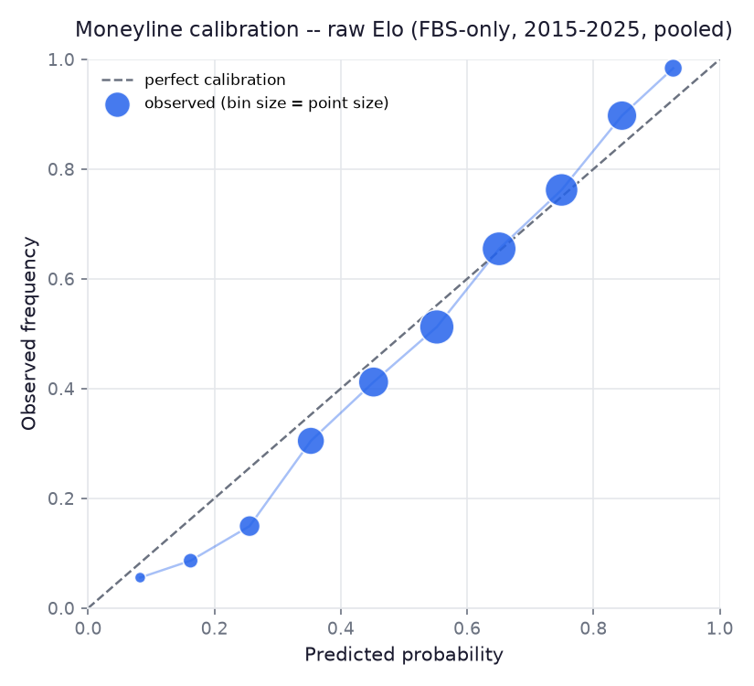
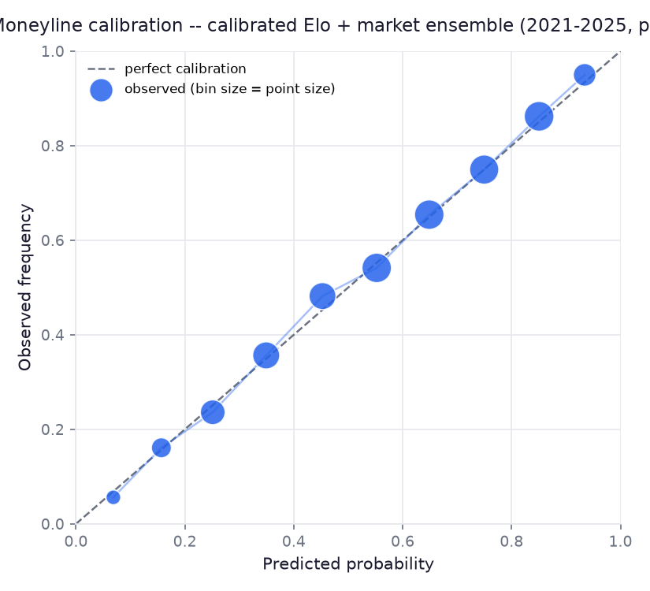
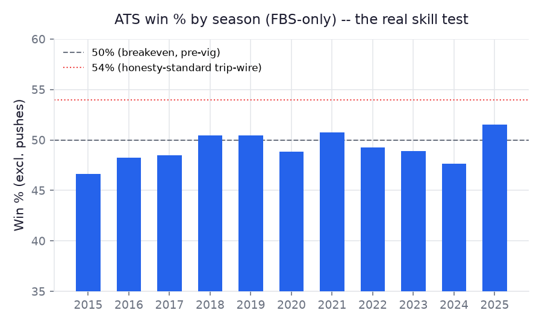
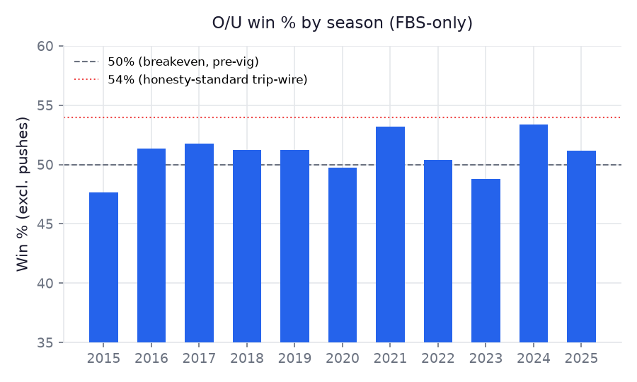
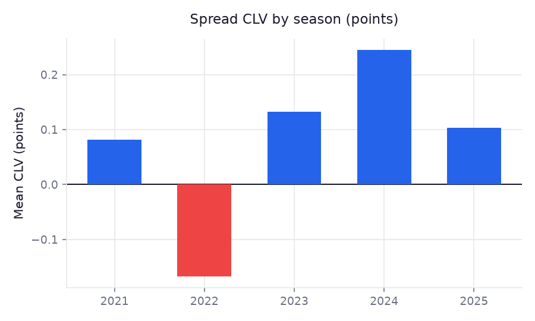
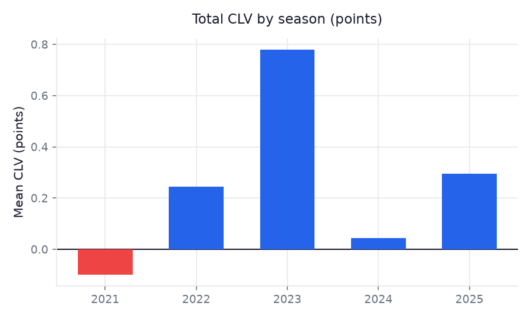
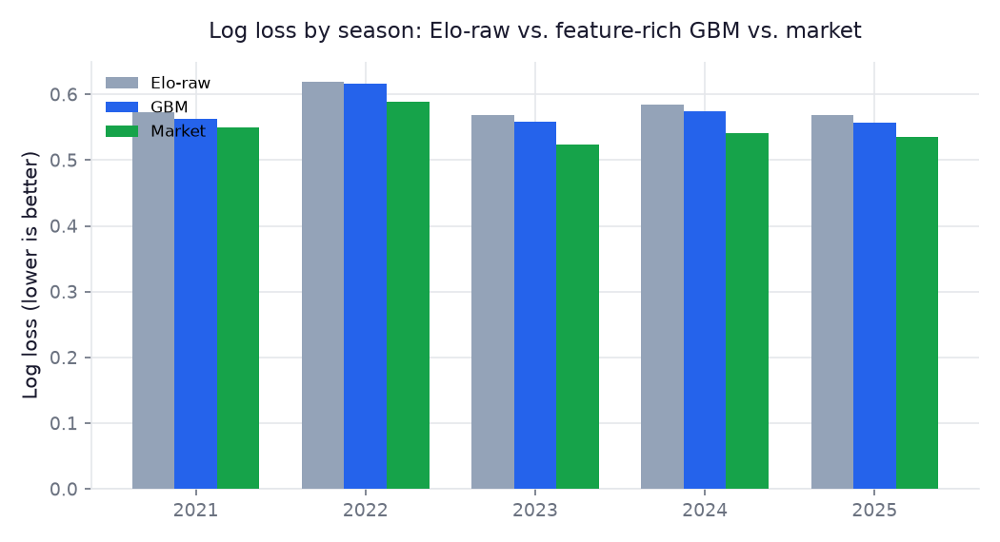

Moneyline · Spread · Total — research/analytics project, not betting advice.
Generated 2026-09-14T06:10:26.153123+00:00. Immutable snapshot — predictions are never edited after publication; results are joined in separately once games are played. "Source" shows which market data won for that game: the-odds-api (real-time, multi-book, preferred when available) or cfbd (fallback) — never both averaged together, since that would blur two different snapshot times into a meaningless number.
| Matchup | Home win % | Pred. margin | Pred. total | Market spread | Cover % | Market total | Over % | Market ML | Edge (ML) | Source |
|---|---|---|---|---|---|---|---|---|---|---|
| Syracuse @ Pittsburgh | 82% | +15.4 | 56.3 | -11.0 | 60% | 51.2 | 54% | 78% | +3.8pp | both |
| Miami @ Wake Forest | 30% | -10.3 | 58.4 | +21.5 | 74% | 55.5 | 49% | 9% | +21.7pp | both |
| Houston @ Texas Tech | 78% | +13.2 | 57.2 | -8.5 | 61% | 53.5 | 51% | 73% | +5.0pp | both |
| Portland State @ Oregon FBS–FCS | 100% | +46.6 | 60.0 | -57.5 | 26% | 64.5 | 32% | no line | — | the-odds-api |
| Coastal Carolina @ Delaware | 52% | +1.0 | 58.7 | -5.0 | 41% | 57.5 | 45% | 65% | -12.2pp | both |
| Arizona State @ Kansas | 37% | -6.5 | 59.2 | +5.5 | 48% | 52.5 | 58% | 35% | +1.3pp | both |
| Mercer @ Georgia Tech FBS–FCS | 98% | +30.8 | 58.0 | -41.5 | 27% | 60.5 | 36% | no line | — | the-odds-api |
| North Carolina @ Clemson | 70% | +10.2 | 51.0 | -3.0 | 66% | 44.5 | 58% | 60% | +10.6pp | both |
| Tulane @ Kansas State | 72% | +11.6 | 55.3 | -20.0 | 31% | 49.5 | 56% | 90% | -18.9pp | both |
| Georgia @ Arkansas | 12% | -18.1 | 60.1 | +24.5 | 64% | 54.5 | 55% | 7% | +5.4pp | both |
| Kent State @ Ohio State | 100% | +39.2 | 54.8 | -52.5 | 22% | 58.5 | 34% | no line | — | both |
| Buffalo @ Penn State | 98% | +30.3 | 53.2 | -38.5 | 32% | 47.5 | 56% | no line | — | both |
| Akron @ Minnesota | 91% | +20.3 | 55.3 | -24.5 | 40% | 49.0 | 57% | 93% | -2.7pp | both |
| Bowling Green @ Iowa State | 93% | +27.2 | 52.0 | -23.5 | 59% | 45.5 | 58% | 93% | +0.2pp | both |
| North Texas @ Texas State | 40% | -4.5 | 63.3 | -3.0 | 33% | 63.5 | 42% | 57% | -17.2pp | both |
| Eastern Michigan @ Wisconsin | 87% | +19.2 | 51.1 | -24.5 | 38% | 46.0 | 54% | 93% | -6.3pp | both |
| NC State @ Vanderbilt | 70% | +11.0 | 58.5 | -3.5 | 67% | 52.5 | 56% | 61% | +9.1pp | both |
| Wyoming @ Central Michigan | 67% | +7.8 | 48.4 | -1.5 | 64% | 39.5 | 63% | 52% | +14.6pp | both |
| Maine @ Boston College FBS–FCS | 93% | +27.5 | 56.9 | -39.5 | 24% | 52.5 | 52% | no line | — | the-odds-api |
| Southern Illinois @ Illinois FBS–FCS | 98% | +34.3 | 57.1 | -41.5 | 34% | 53.5 | 50% | no line | — | the-odds-api |
| Temple @ Toledo | 78% | +12.9 | 55.4 | -5.5 | 67% | 51.0 | 52% | 66% | +12.6pp | both |
| SMU @ Louisville | 46% | -0.2 | 58.9 | -1.5 | 46% | 59.5 | 41% | 53% | -6.5pp | both |
| Miami (OH) @ Cincinnati | 78% | +13.7 | 57.0 | -14.5 | 48% | 50.5 | 57% | 84% | -5.8pp | both |
| Stonehill @ Massachusetts FBS–FCS | 69% | +8.8 | 56.7 | -34.5 | 7% | 44.5 | 71% | no line | — | the-odds-api |
| UTEP @ Michigan | 98% | +34.4 | 53.8 | -35.5 | 47% | 48.5 | 55% | no line | — | both |
| Utah State @ Utah | 98% | +32.0 | 58.5 | -28.5 | 58% | 56.5 | 47% | 95% | +2.9pp | both |
| Wagner @ California FBS–FCS | 93% | +28.3 | 59.2 | — | — | — | — | no line | — | none |
| USC @ Rutgers | 22% | -12.2 | 59.4 | +24.5 | 76% | 59.5 | 42% | 7% | +15.1pp | both |
| Florida State @ Alabama | 91% | +20.9 | 55.5 | -20.5 | 51% | 49.5 | 56% | 90% | +1.0pp | both |
| Duquesne @ Washington State FBS–FCS | 91% | +24.6 | 53.0 | -35.5 | 27% | 52.5 | 43% | no line | — | the-odds-api |
| Kentucky @ Texas A&M | 86% | +18.4 | 56.8 | -17.0 | 53% | 49.5 | 59% | 86% | +0.3pp | both |
| Louisiana Tech @ Baylor | 72% | +12.1 | 58.0 | -17.5 | 38% | 53.5 | 53% | 87% | -15.0pp | both |
| Western Kentucky @ Indiana | 100% | +37.4 | 59.5 | -44.0 | 35% | 59.5 | 42% | no line | — | both |
| Northern Iowa @ Iowa FBS–FCS | 100% | +43.7 | 52.7 | -41.5 | 55% | 48.5 | 52% | no line | — | the-odds-api |
| Stanford @ Duke | 91% | +19.7 | 56.8 | -9.5 | 72% | 51.5 | 55% | 75% | +15.5pp | both |
| Ball State @ Liberty | 63% | +6.7 | 55.4 | -14.5 | 33% | 50.0 | 55% | 84% | -20.8pp | both |
| Mississippi State @ South Carolina | 62% | +5.7 | 58.3 | -3.5 | 55% | 58.5 | 42% | 61% | +1.7pp | both |
| SE Louisiana @ UL Monroe FBS–FCS | 70% | +10.3 | 56.3 | — | — | — | — | no line | — | none |
| Charlotte @ App State | 82% | +16.8 | 57.6 | -19.5 | 44% | 51.5 | 57% | 89% | -6.7pp | both |
| Florida International @ Florida Atlantic | 52% | +0.7 | 61.2 | -6.5 | 37% | 62.5 | 39% | 69% | -16.2pp | both |
| East Carolina @ Old Dominion | 63% | +6.0 | 56.1 | -3.0 | 57% | 49.5 | 58% | 56% | +7.1pp | both |
| Marshall @ Missouri State | 40% | -4.2 | 58.0 | +3.5 | 48% | 51.5 | 58% | 39% | +1.1pp | both |
| Murray State @ Oklahoma State FBS–FCS | 91% | +22.5 | 55.6 | — | — | — | — | no line | — | none |
| Nevada @ Middle Tennessee | 54% | +1.4 | 54.6 | +5.5 | 66% | 51.5 | 49% | 33% | +20.5pp | both |
| Nicholls @ Sam Houston FBS–FCS | 69% | +9.4 | 56.6 | — | — | — | — | no line | — | none |
| Ohio @ South Alabama | 38% | -5.5 | 57.4 | -4.5 | 28% | 52.5 | 54% | 63% | -24.3pp | both |
| UT Martin @ Memphis FBS–FCS | 93% | +28.0 | 57.6 | — | — | — | — | no line | — | none |
| Delaware State @ South Florida FBS–FCS | 98% | +30.2 | 57.3 | — | — | — | — | no line | — | none |
| UConn @ Southern Miss | 35% | -7.6 | 58.7 | +3.0 | 39% | 54.0 | 53% | 41% | -5.1pp | both |
| Western Michigan @ Rice | 30% | -9.0 | 53.1 | +10.0 | 52% | 43.5 | 65% | 22% | +8.3pp | both |
| Florida @ Auburn | 54% | +2.5 | 55.7 | +2.5 | 61% | 52.5 | 50% | 44% | +9.8pp | both |
| Troy @ Missouri | 91% | +20.1 | 54.4 | -27.0 | 34% | 49.5 | 54% | 94% | -3.8pp | both |
| Georgia State @ UCF | 82% | +16.3 | 56.1 | -20.5 | 40% | 52.5 | 50% | 90% | -7.3pp | both |
| Georgia Southern @ Jacksonville State | 54% | +1.8 | 53.9 | -4.0 | 45% | 52.5 | 45% | 62% | -8.3pp | both |
| Eastern Washington @ Washington FBS–FCS | 100% | +39.8 | 54.8 | — | — | — | — | no line | — | none |
| North Dakota @ Nebraska FBS–FCS | 98% | +33.5 | 58.4 | — | — | — | — | no line | — | none |
| Michigan State @ Notre Dame | 91% | +21.8 | 56.4 | -29.5 | 33% | 52.2 | 52% | 95% | -4.4pp | both |
| Colorado @ Northwestern | 69% | +9.0 | 54.5 | -4.0 | 61% | 48.5 | 56% | 62% | +6.4pp | both |
| West Virginia @ Virginia | 68% | +8.0 | 55.6 | -10.0 | 45% | 53.8 | 46% | 75% | -6.9pp | both |
| Virginia Tech @ Maryland | 60% | +4.9 | 58.1 | +3.0 | 68% | 53.5 | 53% | 42% | +17.6pp | both |
| New Mexico @ Oklahoma | 82% | +15.7 | 53.1 | -22.5 | 35% | 47.5 | 55% | 92% | -9.7pp | both |
| BYU @ Colorado State | 8% | -24.4 | 57.4 | +17.5 | 35% | 52.5 | 54% | 13% | -4.9pp | both |
| LSU @ Ole Miss | 72% | +11.6 | 57.9 | +3.0 | 80% | 58.5 | 41% | 42% | +30.0pp | both |
| Kennesaw State @ Tennessee | 93% | +27.2 | 59.3 | -35.5 | 31% | 60.0 | 41% | 98% | -5.0pp | both |
| East Texas A&M @ Tulsa FBS–FCS | 82% | +15.7 | 56.2 | — | — | — | — | no line | — | none |
| UTSA @ Texas | 91% | +22.2 | 59.8 | -30.0 | 33% | 58.0 | 46% | 95% | -4.4pp | both |
| UAB @ Louisiana | 70% | +9.8 | 59.7 | -7.5 | 55% | 56.5 | 50% | 73% | -2.4pp | both |
| Arkansas State @ TCU | 91% | +21.3 | 57.4 | -20.5 | 52% | 56.5 | 44% | 90% | +1.2pp | both |
| South Dakota @ Boise State FBS–FCS | 93% | +28.0 | 57.4 | — | — | — | — | no line | — | none |
| James Madison @ San Diego State | 30% | -9.0 | 57.4 | -2.0 | 26% | 46.5 | 68% | 53% | -23.0pp | both |
| North Dakota State @ Sacramento State | 41% | -3.2 | 55.9 | +28.0 | 92% | 52.5 | 50% | 5% | +35.8pp | both |
| Northern Illinois @ Arizona | 93% | +26.7 | 52.8 | -34.5 | 33% | 50.0 | 49% | 97% | -4.1pp | both |
| Montana @ Oregon State FBS–FCS | 70% | +9.8 | 56.0 | — | — | — | — | no line | — | none |
| Purdue @ UCLA | 72% | +11.6 | 57.4 | -14.5 | 43% | 52.5 | 54% | 84% | -12.4pp | both |
| Fresno State @ San José State | 38% | -5.3 | 54.1 | +6.5 | 53% | 50.5 | 50% | 31% | +7.0pp | both |






